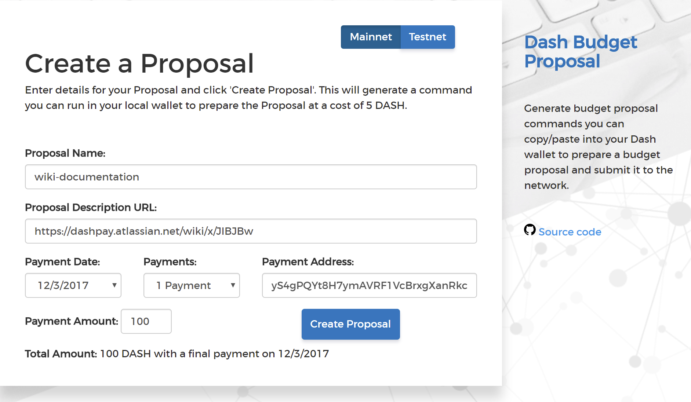
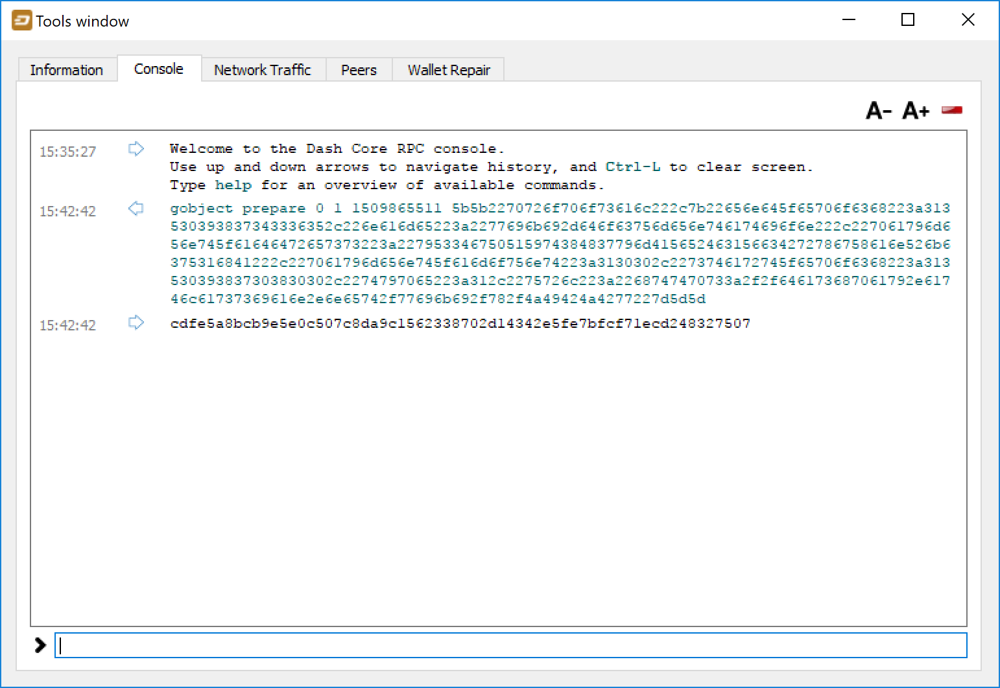
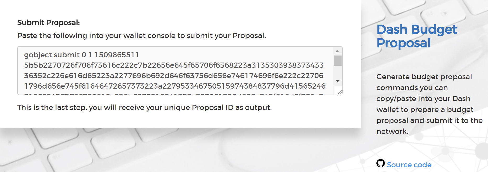

Using Dash Governance¶
Dash’s Decentralized Governance by Blockchain (DGBB) is a novel voting and funding platform. This documentation introduces and details the theory and practice to use the system.
Understanding the process¶
Introduction¶
DGBB consists of three components: Proposals, Votes, and Budgets
Anyone can submit a proposal for a small fee
Each valid masternode can vote for, against or abstain on proposals
Approved proposals become budgets
Budgets are paid directly from the blockchain to the proposal owner
Proposals¶
Proposals are a request to receive funds
Proposals can be submitted by anyone for a fee of 5 Dash. The proposal fee is irreversibly destroyed on submission.
Proposals cannot be altered once submitted
Votes¶
Votes are cast using the registered voting address
The voting address can be delegated to a third party
Votes can be changed at any time
Votes are counted every 16616 blocks (approx. 30.29 days)
Budgets¶
Budgets are proposals which receive a net total of yes votes equal to or greater than 10% of the total possible votes (for example over 448 out of 4480)
Budgets can be nullified at any time if vote totals (cast or re-cast) fall below the approval threshold
Budgets are processed (paid) in order of yes minus no votes. More popular budgets get payment priority.
Approximately 6176 dash (in 2018) are available for each budget cycle, decreasing by 7.14% every 210240 blocks (approx. 383.25 days).
Object structure¶
The following information is required to create a proposal:
proposal-name: a unique label, 20 characters or less
url: a proposer-created webpage or forum post containing detailed proposal information
payment-count: how many cycles the proposal is requesting payment
block-start: the requested start of proposal payments
dash-address: the address to receive proposal payments
monthly-payment-dash: the requested payment amount
Persistence¶
Proposals become active one day after submission
Proposals will remain visible on the network until they are either disapproved or the proposal’s last payment-cycle is reached
Approval occurs when yes votes minus no votes equals 10% or more of the total available votes.
Disapproval occurs when no votes minus yes votes equals 10% or more of the total available votes.
The total available votes is the count of online and responding masternodes and can be seen by running the command
masternode countin the Dash Core wallet debug window. A graph of the total masternode count can be found here
{kind=link}
Templates¶
The following two Microsoft Word templates are available from Dash Core Group to help facilitate standardized proposal submission and updates. Usage is recommended, but not required.
Budget cycles¶
When preparing a proposal, be aware of when the next cycle will occur and plan accordingly. It is recommended to choose your proposal payment start block at least one cycle in the future to allow time for discussion and gathering support and votes. Note that votes will no longer be tallied 1662 blocks (approximately 3 days) prior to the superblock.
Block height |
Approximate date |
|---|---|
1212968 |
Thu Jan 30 02:38:52 UTC 2020 |
1229584 |
Sat Feb 29 09:43:54 UTC 2020 |
1246200 |
Mon Mar 30 16:48:56 UTC 2020 |
1262816 |
Wed Apr 29 23:53:58 UTC 2020 |
1279432 |
Sat May 30 06:59:00 UTC 2020 |
1296048 |
Mon Jun 29 14:04:02 UTC 2020 |
1312664 |
Wed Jul 29 21:09:04 UTC 2020 |
1329280 |
Sat Aug 29 04:14:06 UTC 2020 |
1345896 |
Mon Sep 28 11:19:08 UTC 2020 |
1362512 |
Wed Oct 28 18:24:10 UTC 2020 |
1379128 |
Sat Nov 28 01:29:12 UTC 2020 |
1395744 |
Mon Dec 28 08:34:14 UTC 2020 |
You can view the source code for this calculation at this GitHub gist
Creating proposals¶
Once you have prepared the text of your proposal and set up a website or forum post, it is time to submit your proposal to the blockchain for voting. While all tasks involved with creating a budget proposal can be executed from the Dash Core wallet console, several tools providing a user interface have been developed to simplify this procedure.
Dash Budget Proposal Generator¶
The Dash Budget Proposal Generator supports creating budget proposals on both mainnet and testnet. In the first step, you must enter a short, clear and unique name for the proposal as it will appear on the blockchain. Proposal names are limited to 40 characters. You can then provide a link to the forum or DashCentral where your proposal is described in more detail (use a URL shortening service if necessary), as well as select the amount of payment you are requesting, how often the payment should occur, and the superblock date on which you are requesting payment. This allows you to control in which budget period your proposal will appear, and gives you enough time to build support for your proposal by familiarising voters with your project. Note that the payment amount is fixed and cannot be modified after it has been submitted to the blockchain.
{kind=link}
{kind=link}
Next, the proposal generator will provide you with a command to run from the console of your Dash Core wallet to prepare your budget proposal governance object. Running this command will cost you 5 DASH, which will be “burnt” or permanently removed from circulation. This one-time fee protects the governance system from becoming overwhelmed by spam, poorly thought out proposals or users not acting in good faith. A small transaction fee is charged as well, so make sure slightly more than 5 DASH is available in your wallet. Many budget proposals request reimbursement of the 5 DASH fee.
First unlock your wallet by clicking Settings > Unlock wallet, then open the console by clicking Tools > Debug console and paste the generated command. The transaction ID will appear. Copy and paste this into the proposal generator response window. As soon as you do this, the system will show a progress bar as it waits for 6 confirmations as follows:
{kind=link}
{kind=link}
Step 3: Creating the proposal transaction and waiting for 6 confirmations of the transaction ID¶
Once 6 block confirmations exist, another command will appear to submit the prepared governance object to the network for voting. Copy and paste this command, and your governance object ID will appear as follows:
{kind=link}
{kind=link}
You can use this ID to track voting on the proposal until the budget closes and you receive your payout. You can also submit the ID to DashCentral to claim your proposal and enable simplified voting for masternodes using DashCentral voting services.
DashCentral Proposal Generator¶
DashCentral also includes a tool to create budget proposals, or claim existing proposals so you can add a description on DashCentral and begin discussion with the community. The steps to be taken are almost identical to the procedure described above, and documentation is available here.
Voting on proposals¶
You must vote at least three days before the superblock is created or your vote will not be counted. The exact deadline is 1662 blocks before the superblock.
Voting on DGBB proposals is an important part of operating a masternode. Since masternodes are heavily invested in Dash, they are expected to critically appraise proposals each month and vote in a manner they perceive to be consistent with the best interests of the network. Each masternode may vote once on each proposal, and the vote can be changed at any time before the voting deadline. The following sites and tools are available to view and manage proposals and voting:
For information on how to create a proposal, see here.
DashCentral¶
Many masternode operators store their password-protected masternode private key on DashCentral to enable simple voting with a user-friendly interface. The popularity of this site has made it a common place for discussion of the proposals after they are submitted to the governance system. To vote from the DashCentral web interface, first add your masternode private key to your account according to the instructions here. Note that the masternode private key is not the same as the private key controlling the 1000 DASH collateral, so there is no risk of losing your collateral. A separate password is required to unlock the masternode private key for voting, so the risk of the site operator voting in your name is minimal.
When you are ready to vote, go to the budget proposals page. Simply click to view the proposals, then click either Vote YES, Vote ABSTAIN or Vote NO.
{kind=link}
Dash Masternode Tool (DMT)¶
If you started your masternode from a hardware wallet using DMT, you can also use the tool to cast votes. Click Tools > Proposals and wait for the list of proposals to load. You can easily see the voting status of each proposal, and selecting a proposal shows details on the Details tab in the lower half of the window. Switch to the Vote tab to Vote Yes, Vote No or Vote Abstain directly from DMT.
{kind=link}
Dash Core wallet or masternode¶
If you started your masternode using the Dash Core Wallet (not
recommended), you can vote manually from Tools > Debug console, or
directly from your masternode via SSH using dash-cli. First click on
the proposal you want to vote on at either DashCentral or Dash Ninja. You will see a command
for manual voting below the proposal description. Copy and paste the
command and modify it as necessary. As an example, take this proposal
from Dash Ninja (or
DashCentral).
The voting code for Dash Core Wallet is as follows:
gobject vote-many 6ed7418455e07f4b30b99f0d4a24a2b83282e12b26fe3415673ecbea04ff6c9d funding yes
gobject vote-many 6ed7418455e07f4b30b99f0d4a24a2b83282e12b26fe3415673ecbea04ff6c9d funding no
gobject vote-many 6ed7418455e07f4b30b99f0d4a24a2b83282e12b26fe3415673ecbea04ff6c9d funding abstain
Note that to vote from your masternode directly, you need to prefix the
command with dash-cli, which is usually found in the .dashcore
folder. The command should be similar to the following:
~/.dashcore/dash-cli gobject vote-many 6ed7418455e07f4b30b99f0d4a24a2b83282e12b26fe3415673ecbea04ff6c9d funding yes
~/.dashcore/dash-cli gobject vote-many 6ed7418455e07f4b30b99f0d4a24a2b83282e12b26fe3415673ecbea04ff6c9d funding no
~/.dashcore/dash-cli gobject vote-many 6ed7418455e07f4b30b99f0d4a24a2b83282e12b26fe3415673ecbea04ff6c9d funding abstain
Note this command will trigger a vote from all masternodes configured in
dash.conf. If you have multiple masternodes each with its own .conf
file, or if you want to vote with only some of your masternodes, you
must change the command from vote-many to vote. If your vote was
successful, you should see a confirmation message reading Voted
successfully.
{kind=link}
You can also view a list of proposals in JSON format from the console to copy and paste the proposal hash for voting as follows:
gobject list
Delegating votes¶
DIP003 masternodes feature a separate voting key, which makes it possible to delegate your vote to a representative. Simply enter a Dash address provided by the delegate when registering your masternode, or update your masternode registration to delegate the vote of a running masternode. The wallet controlling the private key to this address will then cast votes on behalf of this masternode owner simply by following the Dash Core voting procedure described above. No further configuration is required.